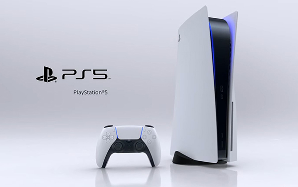
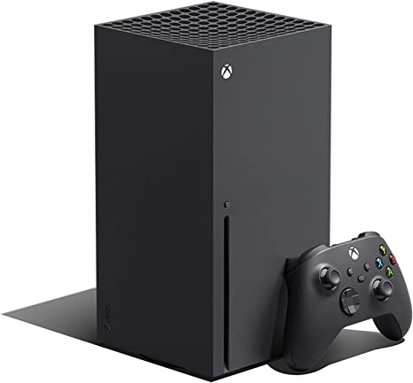

Playstation 5
Hardware. La PlayStation 5 utilizza un processore Zen 2 di AMD con 8 core a una frequenza variabile limitata a 3,5 GHz. La GPU è un sistema su chip (SoC) personalizzato, basato su RDNA 2 di AMD, con 36 unità di calcolo funzionanti a frequenza variabile, limitato a 2,23 GHz e capace di 10,28 TFLOPS.
Xbox Series X/S
Sperimenta velocità e prestazioni di nuova generazione con il nostro più grande catalogo di titoli digitali. Vivi mondi più dinamici, tempi di caricamento più rapidi e aggiungi Xbox Game Pass Ultimate (abbonamento venduto separatamente) per giocare ai nuovi titoli il giorno del lancio. In più, gioca con gli amici a centinaia di titoli di grande qualità come Minecraft, Forza Horizon 5 e Halo Infinite su console, PC e cloud
Nintendo Switch
Switch rappresenta il primo tentativo da parte di Nintendo di creare una console ibrida tra una casalinga e una portatile essendo dotato di un supporto basato su cartuccia elettronica, formato in precedenza abbandonato da Nintendo dopo il Nintendo 64 nel settore delle console fisse ma adottato in tutte le console portatili, alle quali le cartucce per Switch assomigliano. È la terza console più di successo di Nintendo, superata solo dal Nintendo DS e dal Game Boy in termini di unità vendute.